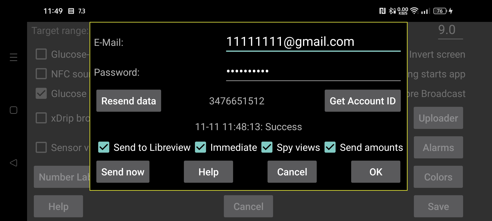

Juggluco میتواند مقدارهای گلوکز و «مقدارها» را به LibreView بفرستد.
مانند برنامهٔ LibreLink، Juggluco دادههای ۸۹ روز اخیر را به LibreView ارسال میکند.
برای استفاده، در libreview.com حسابی بسازید و ایمیل و گذرواژهٔ آن را در این صفحه وارد کنید. دادههای مربوط به یک بازهٔ زمانی را از بیش از یک منبع (مثلاً هم LibreLink و هم Juggluco) به یک حساب LibreView نفرستید. میتوانید دستگاههای قبلی را در «تنظیمات حساب ← دستگاههای من» در LibreView حذف کنید یا حساب تازهای بسازید. (https://libreview.com)
برای فعالسازی، گزینهٔ «ارسال به LibreView» را هم روشن کنید.
هر بار که از Juggluco به برنامهٔ دیگری میروید، اگر در ۲۰ دقیقهٔ گذشته دادهها فرستاده نشده باشند، Juggluco دادههای تازه را به LibreView ارسال میکند. با «ارسال اکنون» نیز میتوانید بهصورت دستی ارسال کنید.
علاوه بر گلوکز، میتوان «مقدارها» را نیز ارسال کرد. «ارسال مقدارها» را انتخاب کنید و برای هر برچسب تعیین کنید به چه معناست. (Send amounts)
«RU»: فقط اگر بهجای libreview.com از libreview.ru استفاده میکنید روشن کنید. این گزینه فقط برای حسگرهای Libre 2 است؛ Libre 3 فقط با libreview.com کار میکند، زیرا برنامهٔ روسی Abbott برای Libre 3 وجود ندارد. (https://libreview. ru) (https://libreview.com)
«فوری»: مقدارهای گلوکز حسگرهای Libre 2 یا 3 را همان لحظهٔ دریافت به LibreView میفرستد. این گزینه معمولاً فقط همراه LibreLinkUp مفید است. برای استفاده باید در یکی از برنامههای Libre شرکت Abbott، دسترسی LibreLinkUp را به همین حساب LibreView اضافه کنید. اگر برنامهٔ Abbott در کشورتان موجود نیست، میتوانید از نسخهٔ اصلاحشدهٔ برنامهٔ Libre 3 استفاده کنید. (patched Libre 3 app)
گاهی مقدار تازه فوراً در LibreLinkUp دیده نمیشود، چون صفحه خودکار بهروز نمیشود. دقت کنید: LibreLinkUp ممکن است مقدار قدیمی نشان دهد؛ اگر روی نمودار بزنید، مقدار پیشین را بهجای مقدار کنونی نشان میدهد. زمان خوانش را بررسی کنید.
«ثبت مشاهدهها»: وقتی روشن باشد، Juggluco به LibreView اعلام میکند آیا کاربر مقدار گلوکز را دیده است یا نه. وقتی خاموش باشد، همیشه «دیده نشده» میفرستد. برای ارسال قابل اعتماد این وضعیت باید «فوری» نیز روشن باشد و Juggluco پیوسته به اینترنت متصل بماند تا مشاهدههای Libre 3 را از دست ندهد. Libre 2 این اطلاعات را تا زمانی که حسگر از کار نیفتاده ذخیره میکند.
«تغییر تاریخ آغاز»: ارسال را از تاریخ و زمان مشخص دوباره شروع میکند؛ هنگام تغییر حساب LibreView باید از آن استفاده کنید.
نتیجهٔ آخرین تلاش برای ارسال به LibreView زیر دکمهٔ «دریافت شناسهٔ حساب» نشان داده میشود.
LibreView در تحلیلهای خود از مقدارهای «تاریخچه» استفاده میکند، اما صفحهٔ «آمار» Juggluco از «دادههای پیوسته» (منوی میانی سمت چپ ← آمار). این تفاوت باعث اختلافهای کوچکی میشود. مقدارهای پیوسته معمولاً نوسان بیشتری دارند، بنابراین آمار Juggluco ممکن است درصد زمان در محدوده را کمتر و تغییرپذیری را بیشتر نشان دهد. «درصد زمان فعال» نیز در Juggluco کمتر است، چون هر خوانش پیوستهٔ ازدسترفته را حساب میکند. (left middle menu->Statistics)
Juggluco میتواند همزمان به چند حسگر متصل شود، اما LibreLink فقط یک حسگر را در هر زمان اداره میکند. Juggluco هم برای همانندسازی این رفتار، دادههای هر بار فقط یک حسگر را به LibreView میفرستد. ابتدا دادههای یک حسگر را ارسال میکند و وقتی دیگر دادهای از آن نماند به حسگر بعدی میرود؛ سپس به حسگر قبلی برنمیگردد. بنابراین اگر چند حسگر همزمان فعالاند و حسگری که دیرتر اضافه شده پیش از حسگر قدیمیتر پایان یابد، دادههای حسگر قدیمیتر دیگر به LibreView فرستاده نمیشوند.
«دریافت شناسهٔ حساب»: اگر فقط شناسهٔ LibreView را برای اسکن حسگر میخواهید و قصد ارسال داده ندارید، ایمیل و گذرواژه را وارد کنید و «دریافت شناسهٔ حساب» را بزنید. شناسه در همان ردیف، پیش از دکمه، ظاهر میشود؛ این کار ممکن است زمان ببرد و صفحه خودکار تازه نمیشود. این شناسه امکان استفاده از حسگر FreeStyle Libre 3 را فراهم میکند که قبلاً با برنامهٔ Libre 3 شرکت Abbott و همان حساب LibreView راهاندازی شده است. (Get Account ID) (Get Account ID)
شناسهٔ عددی حساب LibreView را میتوان از UUID موجود در نوار نشانی گزارشهای LibreView نیز به دست آورد و دستی در Juggluco وارد کرد. (converted)
«برنامهٔ جدید Libre»: برای فعالسازی Libre 3 همان عددی را به کار میبرد که برنامهٔ جدید Libre شرکت Abbott استفاده میکند. اگر معلوم باشد این عدد در سمت راست گزینه نمایش داده میشود و در غیر این صورت -1 دیده میشود. برنامهٔ جدید Libre آمریکا از عدد دیگری نسبت به برنامهٔ قدیمی Libre 3 برای راهاندازی حسگر استفاده میکند. پیشتر Juggluco نمیتوانست حسگرهای فعالشده با این برنامه را تحویل بگیرد، اما اکنون باید بتواند.
دادههای حسگرهای Sibionics و Dexcom به LibreView فرستاده نمیشوند.
برای ذخیرهٔ دادهها با قالب LibreView میتوانید از «منوی میانی سمت چپ ← خروجی» یا وبسرور داخلی Juggluco نیز استفاده کنید؛ این خروجیها مقدارهای گلوکز Dexcom و Sibionics را هم در بر دارند. (خروجی) (web server)